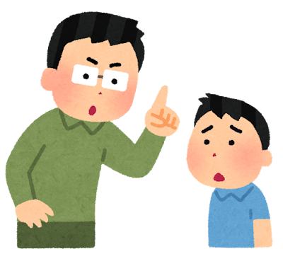
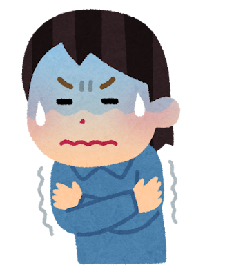
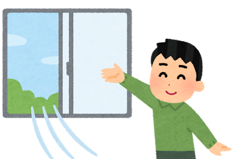
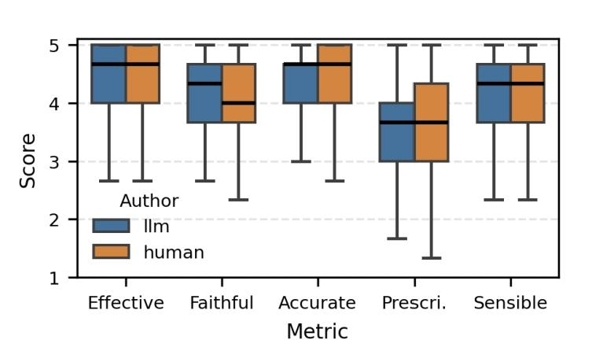
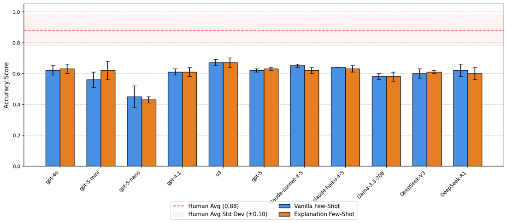
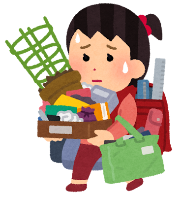

Can language models read between the lines?
“Have you done your homework?”

The words are identical. The meaning is not. Humans resolve this instantly from who is speaking, how, and why. A model that only sees the sentence reads it as an information-seeking yes/no question, which in both cases is the one thing it isn't.
DRInQ turns this into a benchmark. Every item holds the question's surface form fixed and varies only the conversational context, so that getting the item right requires pragmatic inference rather than lexical cues. Below you can try the task before reading what we found.
Which comment is the speaker most likely implying?
We start from a base query, a plain question like “Don't you feel cold?”, and condition generation on a latent speaker intent: to scold, to request, to offer, and so on. Each intent yields a different conversational context in which the same question carries a different implied comment. Annotators then validate that the context really does carry that implication, and the surviving items become the benchmark.


Because the surface form never changes, a model cannot succeed by pattern-matching the question. It has to use the context. The semi-automated pipeline lets us generate question–context–interpretation triples with systematic variation at a scale that hand-writing contexts would not allow, which in turn let us compare human-written and model-written contexts directly.
We asked both human authors and LLMs to write contexts for the same question and intended implication, then had annotators rate the results. Human authors reached for safe, recognizable scenes. Models produced more varied and more surprising ones, sometimes with interpretations that exceeded what the context actually supported.
“Are we having dinner at home tonight?” (intent: to insult)

This is the central result. The same models that generate plausible pragmatic scenarios when guided often fail to recover the intended implication when asked to interpret one. We call this the generation–inference asymmetry. Across eleven current models, few-shot accuracy clusters between 45% and 70%, against a human average of 88%. Adding worked explanations to the few-shot prompt barely moves the needle.

Structured prompting does help smaller models: scaffolds that ask the model to first rule out non-specific or malicious readings, or to reason explicitly about pragmatics, lift GPT-5-nano and GPT-5-mini substantially toward human agreement. For the largest models the scaffolds matter less, and a gap to humans remains.
Looking at where models go wrong, two patterns recur. First, when a context contains any negatively-valenced detail, models tend to read the implication as a criticism even when the speaker is clearly being kind. Second, models over- or under-shoot the strength of the inference, reading a simple request as an elaborate apology, or a gentle hint as a verdict.

“Want me to carry your bags?”An older brother confidently asks his sister, who struggles with a heavy load of groceries.
“Could you please be quiet?”
A younger sibling apologetically repeats to his teenage brother, who practices passionately in a band.
By reframing conversational implicature as a controlled evaluation problem, DRInQ lets us ask which reasoning fails rather than just how often. The dataset, poster, and this demo are released so that others can probe pragmatic understanding with the same controls, and so that anyone can spend five minutes above discovering how much of everyday meaning lives between the lines.